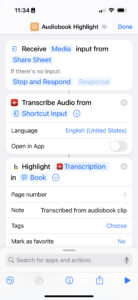

Capturing Quotes and Highlights from Audiobooks
I don't listen to many audiobooks, but when I do, I often wish for a way to capture some quote or reference without having to manually transcribe it. Luckily, by using tools that do one thing well and that embrace automation and interoperability, I've achieved this. The apps involved are Highlighted, Overcast, and VoiceExpress. These are then tied together with Shortcuts.
Highlighted
I've used Highlighted for nearly three years, and over time, it has become a delightful record of the books I have read.
Overcast
I download my audiobooks in a DRM-free format, usually from Libro.fm, and then upload them to Overcast in order to take advantage of Smart Speed. (Uploads are a feature of the $10/year subscription, which I happily pay.)
VoiceExpress
It took a little bit of searching, but VoiceExpress is a simple app that uses iOS's native transcription features to convert audio to text.
The Shortcut
The shortcut here is very simple. It accepts Media files via the Share Sheet, pipes it into the Transcribe Audio action from VoiceExpress and then passes the resulting text into the Highlight action. To use the shortcut, prepare a clip of an audiobook and share it to the shortcut. That's it!

Caveats
The results are of course imperfect; they usually require some editing after the fact. It's also possible that I will not accurately intuit the punctuation for complex sentences. I find these tradeoffs acceptable for the overall benefit.
The two biggest players for audiobooks are Audible and Libro.fm, but neither supports sharing clips. (Audible used to but the feature was removed.) I was already using Overcast for audiobooks anyway, but if I weren't, the ability to capture highlights in this way would be enough to get me to start.